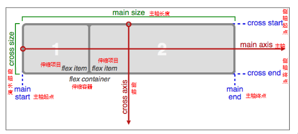
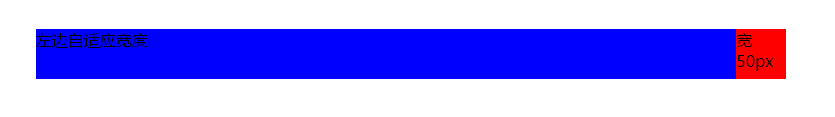
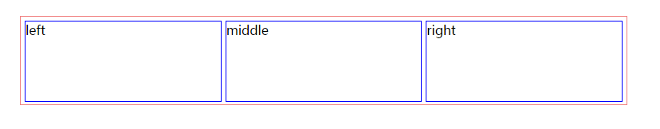

移动端适配
- 流式布局 + viewport
视口 viewport
- 在移动端用来承载网页的这个区域，就是我们的视觉窗口，也叫viewport（视口）, 这个区域可是设置高度宽度，可是按比例放大缩小，而且能设置是否允许用户自行缩放。
viewport参数
- width:宽度设置的是viewport宽度，可以设置device-width特殊值
- initial-scale：初始缩放比，大于0的数字
- maximum-scale: 最大缩放比，大于0的数字
- minimum-scale: 最小缩放比，大于0的数字
- user-scalable: 是否用户缩放，yes或no（1或0）
一个标准的移动Web开发页面
- 用meta标签把viewport的宽度设为device-width，同时initial-scale=1，user-scalable = 0就构建了一个标准的移动web页面
- ‘‘
一、常用布局之百分比布局（也叫流式布局)
- 流式布局就是百分比布局，通过盒子的宽度设置成百分比(100%)来根据屏幕的宽度来进行伸缩，特点：不受固定像素的限制，内容向两侧填充。
流式布局是移动web开发使用的常用布局方式
二、清除高亮
- ‘-webkit-tap-highlight-color : transparent;/清除点击高亮效果/‘
三、盒模型的计算方式
- 在移动端通常使用的是百分比布局，那么这样的布局如果使用border或者padding或使容器的宽度超出屏幕的宽度产生滚动条。可以通过css3属性 box-sizing设置所有的盒子重边框开始计算宽度。
- ‘-webkit-box-sizing: border-box;/设置宽度以边框开始计算/‘
- ‘box-sizing: border-box;’
四、清除Input的默认的样式
- 在移动设备的浏览器当中表单一般会有默认的属性 通过border：none
outline：none是无法完全清楚的，还是会有一些浏览器默认的属性，比如：
内阴影，立体感、、、对于这些浏览器默认加上的样式我们有一个属性 -webkit-appearance 这个属性指的是设置成 none - ‘-webkit-appearance: none;’
最小宽度和最大宽度的限制
- 适用：图片比较多的首页，门户，电商 等。
- 作用:保证页面在尺寸比较大的设备当中保证页面的效果也就是清新度
保证页面在小尺寸的设备当中有较好的布局效果。
Img的下间隙问题
|
|
- 文字基线默认的 baseline 是以X的下边开始的
Img是行内块级元素 它也会有默认的基线对齐。那么和文字一样也会距离底部有一定的间隙。 - 可以将图片设置成块级元素让图片挨着底部
手机上图片模糊的原因以及解决方法
- 1：1的显示在移动设备当中图标会失真原因是什么？
在高清屏当中会用两个或多个物理像素来显示实际的1px图片内容那么其实就是相当于把1px的图片放大显示了，所以有毛边的图片一般都会失真，也就是显示模糊。 - 解决方案，采用压缩图标尺寸的方式来解决。
如果是Img使用直接设置宽高的方式来压缩。
如果是背景使用的是设置background-size的方式来压缩
H5新标签搜索按钮调用
|
|
全屏单页面布局
|
|
伸缩布局
三个重要概念
- 主轴：Flex容器的主轴主要用来配置Flex项目，默认是水平方向
- 侧轴：与主轴垂直的轴称作侧轴，默认是垂直方向的
- 方向：默认主轴从左向右，侧轴默认从上到下
- 主轴和侧轴并不是固定不变的，通过flex-direction可以互换。

伸缩布局基本语法
- a、指定一个盒子为伸缩盒子 display: flex;(以前使用display:-webkit-box-);
- b、设置属性来调整此盒的子元素的布局方式 例如 flex-direction
- c、明确主侧轴及方向
- d、可互换主侧轴，也可改变方向
- e、伸缩盒子的子容器如果想进行比例分配可设置flex:112345678910111213141516171819202122232425262728293031323334353637383940414243#### 参数说明* a、flex-direction调整主轴方向（默认为水平方向）* b、justify-content调整主轴对齐* c、align-items调整侧轴对齐* d、flex-wrap控制是否换行* e、align-content堆栈（由flex-wrap产生的独立行）对齐* f、flex-flow是flex-direction、flex-wrap的简写形式* g、flex子项目在主轴的缩放比例，不指定flex属性，则不参与伸缩分配* h、order控制子项目的排列顺序，正序方式排序，从小到大此知识点重在理解，要明确找出主轴、侧轴、方向，各属性对应的属性值可参考示例源码#### 常用布局示例#### 两栏布局，一栏固定宽，另一行自适应```html<style type="text/css">*{margin: 0;padding: 0;}.content{display: -webkit-box;width: 750px;margin: 100px auto;}.left{-webkit-box-flex: 1;height: 50px;background-color: blue;}.right{width: 50px;height: 50px;background-color: red;}</style><body><header class="content"><div class="left">左边自适应宽度</div><div class="right">宽50px</div></header></body>

一个三列自适应的伸缩布局
|
|
